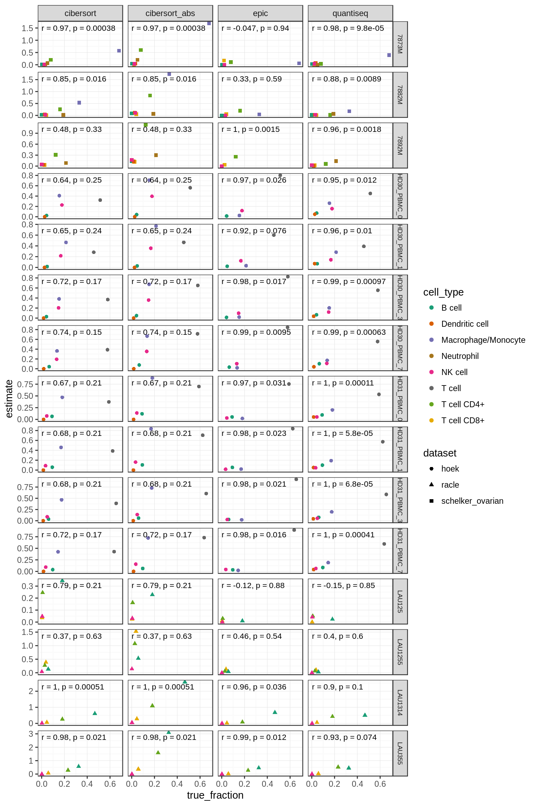

6 Within-sample comparsions
only works with methods that provide an absolute score, or a score that is relative to total immune cell content. 
Compute the average over all samples:
sample_correlations = all_results_ref %>%
filter(method %in% within_methods) %>%
filter(!(cell_type == "T cell" & dataset != "hoek")) %>%
group_by(dataset, method, sample) %>%
do(make_cor(.$true_fraction, .$estimate))
average = sample_correlations %>%
group_by(method) %>%
summarise(pearson = mean(pearson)) %>%
mutate(sample = "mean") %>%
mutate(dataset = "mean")
sample_correlations %>%
bind_rows(average) %>%
mutate(pearson_text = if_else(pearson < 0, "< 0", as.character(round(pearson, 2))),
pearson = if_else(pearson < 0, 0, pearson)) %>%
ggplot(aes(x=sample, y=method)) +
geom_tile(aes(fill=pearson)) +
geom_text(aes(label=pearson_text), size=3) +
scale_fill_distiller(type="div", palette = "RdYlGn", direction=1, values=c(0,1)) +
theme(axis.text.x=element_text(angle = 90, vjust = .5, hjust=1))